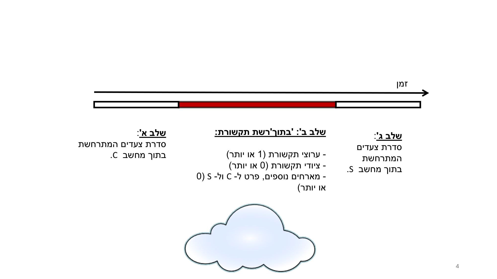
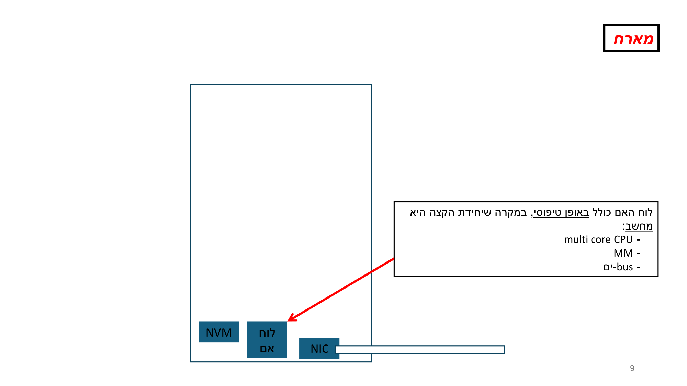
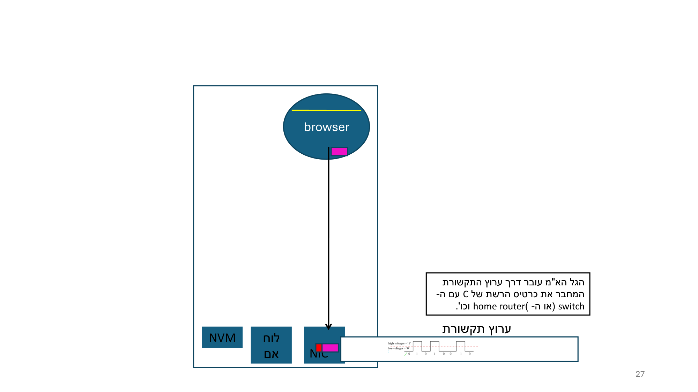
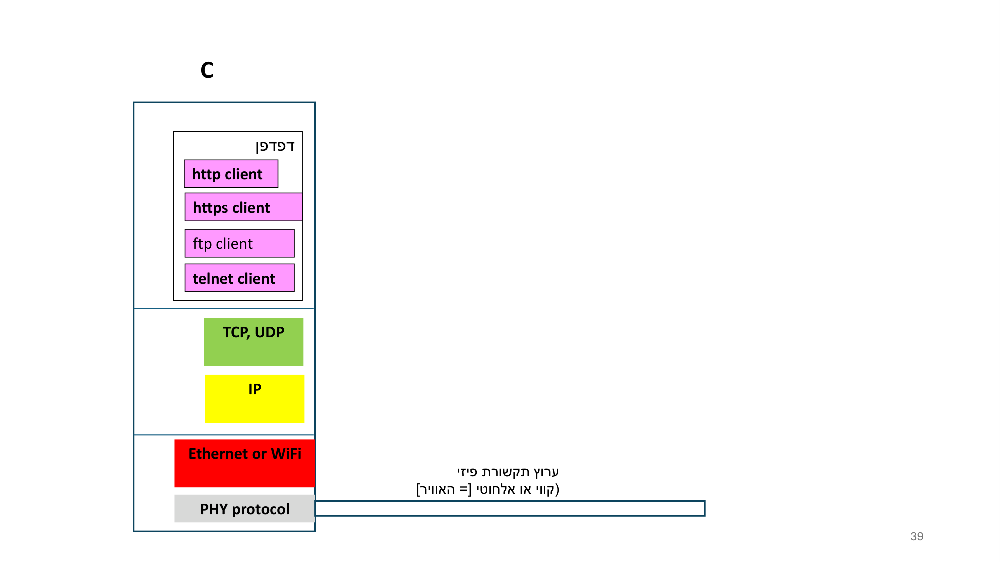

מאחורי ה-API — מ-browser ל-packets
⏱ זמן משוער: 40 דק'
מה עומד מאחורי שורת הקוד fetch()?
כמתכנת אתה מכיר את הצד היפה של הסיפור: קוראים ל-API, מקבלים תשובה. אבל מה באמת קורה בין הרגע שבו המשתמש מקליד כתובת ב-URL ובין הרגע שבו הביטים עוזבים את המחשב פיזית דרך הכבל או האוויר? המרצה בונה את כל המודול הזה כסיפור אחד מתמשך: לוקח דוגמה של פתיחת דף web (Moodle), ומפרק אותה לצעדים ממוספרים — מהדפדפן, דרך http, דרך הקמת קישור, עד לחלוקת ההודעה ל-packets ולהמרתה לאות פיזי.
ציר הזמן: 3 השלבים של "מה קורה בין שני מארחים"
המרצה ממסגר כל העברת נתונים ממחשב C למחשב S כשלושה שלבים עוקבים על ציר זמן (חץ משמאל לימין):
- שלב א' (Stage A): רצף של צעדים שקורים בתוך מחשב C (השולח).
- שלב ב' (Stage B): השנוע (המעבר) של המידע מ-C ל-S — דרך / באמצעות רשת התקשורת שמחברת ביניהם. הביטים עוברים דרך אוסף של ערוצי תקשורת וציודי תקשורת.
- שלב ג' (Stage C): רצף של צעדים שקורים בתוך מחשב S (המקבל).
שקף 4 מגדיר את "תוך הרשת" (שלב ב') בדיוק: ערוצי תקשורת (1 או יותר) + ציודי תקשורת (0 או יותר) + מארחים נוספים, פרט ל-C ול-S (0 או יותר). כלומר: ערוץ אחד לפחות, אפס ציודים ומעלה, אפס מארחים נוספים ומעלה. הרשת מצוירת כענן.

מקור: L03 (4).pdf
בתוך ה-host: מה יש בקופסה
המרצה מצייר host (מארח) כמלבן גדול, ובתחתיתו שלוש קופסאות כחולות:
- NVM — זיכרון לא-נדיף (non-volatile memory).
- לוח אם (motherboard / mainboard).
- NIC = Network Interface Card (כרטיס רשת) — יושב בקצה, ומחובר החוצה אל הערוץ הפיזי.
הערוץ תקשורת הפיזי הוא, בלשון המרצה בדיוק, "ערוץ תקשורת שדרכו המידע 'באמת' עובר. המידע עובר פיזית !!! לא לוגית!". איך? "על ידי 'שימוש' בפיסיקה (physics)" — באמצעות גלים אלקטרו-מגנטיים או גלי אור. הערוץ יכול להיות קווי (כבל חשמלי או סיב אופטי) או אלחוטי (האוויר).
ה-NIC "מתאים" (מתאים) את עצמו לסוג הערוץ הפיזי: ערוץ קווי חשמלי, ערוץ אלחוטי (חשמלי), או ערוץ קווי אופטי. לוח האם (כשיחידת הקצה היא מחשב) כולל בדרך כלל: multi core CPU, MM (main memory), ו-bus-ים.

מקור: L03 (4).pdf
שירותים, אפליקציות רשתיות ו-client-server
משתמש אנושי "רוצה לגלוש" — טכנית הוא רוצה להביא את תוכן דף ה-web משרת שמארח אתר, כדי שה-browser יוכל לרנדר אותו בחלון. המרצה מגדיר (שקף מודגש): "שירותים (services) שרשת מחשבים 'מספקת' למשתמשים אנושיים 'ניתנים'/'ממומשים' על ידי אפליקציות רשתיות." כלומר, שירותי הרשת ממומשים על ידי network applications.
אפליקציית client-server היא אפליקציה בעלת 2 חלקים / 2 תוכניות — צד לקוח + צד שרת — הרצים על hosts שונים המחוברים ברשת:
- מארח לקוח = client host; מארח שרת = server host.
- צד הלקוח "מבקש משהו" מצד השרת; צד השרת "משרת" את הלקוח ("מספק ללקוח את מבוקשו").
בטרמינולוגיה של רשתות מחשבים: תהליך לקוח (client process) יוזם קשר עם תהליך שרת (server process). תהליך הלקוח מעביר request לתהליך השרת — וה-request הוא אוסף של ביטים. השרת מחזיר response ללקוח, שגם הוא אוסף של ביטים. ה"מעביר" נעשה תמיד דרך הרשת שמחברת בין המארחים.
מקור: L03 (4).pdf
הסיפור המרכזי: browser → http → קישור TCP → send()
זה הלב של המודול. המרצה מוליך רצף "צעד" (step) ממוספר, בונה דוגמה רצה אחת (פתיחת דף web). הנה הצעדים כפי שניתנו:
- צעד 1: המשתמש מספק URL = Uniform Resource Locator. דוגמאות: www.google.com, online.shenkar.ac.il.
- צעד 2: ה-browser מבצע parsing ('מנתח') של ה-URL ומחלץ: את ה-hostname של השרת, את שם הקובץ המבוקש; ואם אין שם קובץ → משתמש בשם קובץ ברירת מחדל.
- צעד 3: ה-browser מפעיל module (תת-תוכנית) שמממש פרוטוקול תקשורת בשם http = hyper-text transfer protocol, ומורה לו לשלוח בקשה/הודעה לתוכנית השרת. ההודעה היא http request message (הודעת בקשה).
- צעד 4: ה-http (א) מקים קישור (TCP connection) עם ה-http בתוכנית השרת, ו-(ב) מכין את הודעת הבקשה. ההודעה היא אוסף של בתים; במקרה הזה כל בית מייצג תו. להודעה יש פורמט (מבנה פנימי): הבתים מאורגנים כאוסף של שדות.
- צעד 5: ה-http שולח (= מבצע send()) את הודעת הבקשה דרך קישור ה-TCP שהקים עם ה-http של השרת.
שם תוכנית השרת (שקף 20): לצורך הדיון היא נקראת WSP = Web Server Program. ה-WSP "כולל" מודול/תת-תוכנית בשם http, או http server. ה-http של הדפדפן = http client.
מי מדבר עם מי — "יותר ועוד יותר מדויק" (שקף 22):
- יש העברת מידע בין 2 המארחים (2 המחשבים).
- מדויק יותר: בין תהליך הלקוח (ה-browser) הרץ על מכונת הלקוח "יחד עם תהליכים רבים אחרים", ובין תהליך השרת (ה-WSP) הרץ על מכונת השרת "יחד עם תהליכים רבים אחרים".
- מדויק אף יותר {!!!}: בין ה-http client (חלק מתהליך הלקוח) ובין ה-http server (חלק מתהליך השרת).
הפורמט של הודעת ה-http request (שקף 24)
שורה ראשונה לדוגמה:
GET file-name HTTP/1.1 CRLF ...
נניח לצורך הדיון שההודעה כולה = 1300 בתים. הם מחולקים לשדות: למשל 3 הבתים הראשונים = שדה אחד (המתודה GET); הבתים שבין הרווח הראשון לשני = שם הקובץ (שדה שני); 8 הבתים הבאים HTTP/1.1 = שדה שלישי; וכן הלאה. החוקים שמגדירים את המבנה הפנימי הזה = אוסף חוקים מאוד קשיחים, כולם נקראים http, וכתובים במסמך אפיון מפורט ומדויק.
מקור: L03 (4).pdf
מהודעה ל-NIC ולכבל: packetization, DTA ו-ATD
ההודעה חייבת לעבור אל ה-NIC כדי שתישלח פיזית דרך הערוץ הפיזי. ה-NIC יוצר carrier signal (אות נשא) ש"נושא את הביטים של ההודעה על הגב שלו". בדרך:
- מתרחשים אלפי צעדים; ביניהם, הבתים של ההודעה מחולקים ונארזים ליחידות מידע בשם packets (מנות).
- ה-NIC מבצע המרה של בתי ה-packet לאות אנלוגי = DTA = Digital To Analog.
- אות הנשא (גל אלקטרו-מגנטי) עובר דרך הערוץ אל switch / home router וכו'.
- ב-NIC המרוחק (למשל של ה-switch), הגל מומר חזרה מאנלוגי לבינארי דרך ATD = Analog To Digital.
🎓 הרחבה — דוגמת הסיכום מחדר 247 (שקף 35)
המרצה בחדר 247 פותח את Moodle, מקליד online.shenkar.ac.il; ה-browser מזהה את המחרוזת כשם host, משתמש בשם קובץ ברירת מחדל, מורה ל-http client להרכיב בקשה. ה-http client מנסה להקים קישור עם ה-http server (חלק מה-WSP הרץ על שרת ה-Moodle); אם הצליח → קורא ל-send(). אלפי צעדים: הודעת הבקשה "נשברת ונארזת" ל-packets; כל packet מגיע ל-NIC של מחשב חדר 247; ה-NIC יוצר אות נשא → מגיע ל-access switch במסדרון המחלקה → צעדים רבים → נשלח ל-backbone switch → ...

מקור: L03 (4).pdf
למה בכלל packets? packet switching מול circuit switching
"חידוד" של המרצה על packets (שקפים 29–30): העברת נתונים בין 2 מארחים לרוב כרוכה ב"הרבה" בתים — אלפים, עשרות אלפים, מיליונים (העלאת/הורדת קובץ מאתר הקורס; זרם וידאו ב-Zoom; זרם קול). ברשתות מחשבים ההעברה נעשית ביחידות קטנות יחסית {כמה אלפי} בתים: הבתים לא נשלחים "במכה אחת" — הם מחולקים ל-packets (מנות).
- דוגמה: כל packet מכיל פחות מ-2000 בתים במקסימום.
- השיטה נקראת packet switching (מיתוג מנות).
- כיוון שהרשתות תוכננו מלכתחילה ל-packet switching, המידע שאפליקציות רשת שולחות מחולק ל-packets על ידי הפרוטוקולים הרלוונטיים, וה-NICs מתוכננים להזיז packets.
מי אורז הודעות ל-packets? (שקפים 42–45):
- אם כמות הנתונים מ-Psrc ל-Pdest "קטנה יחסית" → תוזז בתוך packet יחיד (למשל הודעת http request).
- אם גדולה יחסית → תוזז בכמה packets (למשל קובץ גדול מ-500 בתים — "500 הוא לא מספר קסם, רק לאינטואיציה").
- מי אורז? פרוטוקול שכבה 4 (שכבת התעבורה): TCP או UDP. כל אחד אורז אחרת: header שונה, מקסימום בתים שונה ל-packet.
- מנגנון האריזה (שקף 45): פרוטוקול שכבה 5 בתוך Psrc שולח הודעה לשכבה 5 בתוך Pdest על ידי קריאה ל-send(), כאשר הארגומנט הראשון הוא socket descriptor. ← זו האזכור המפורש הראשון של socket בקורס.

🎓 הרחבה — circuit switching ו-statistical multiplexing (לא נדרש למבחן)
כדי להראות ש-packet switching אינה האפשרות היחידה: רשת הטלפון הקווית מזיזה קול באמצעות circuit switching (מיתוג מעגלים). היא תוכננה עשורים לפני רשתות המחשבים, לנשיאת קול אנושי (ואחר כך תמונות/פקסים). שם זרם הקול אינו מחולק ל-packets — הוא עובר "כמכלול" (כ'מכלול').
רקע מתמטי (L04 שקפים 5–6): רשתות המחשבים הראשונות החליפו circuit switching ב-packet switching. ניתוח הראה ש-circuit switching הוא ניצול מאוד לא יעיל של משאבי הרשת לתעבורת מחשבים — המשאבים לא מנוצלים 90%–99% מהזמן. המאפיין הקונספטואלי/מתמטי נקרא statistical multiplexing; המימוש ההנדסי נקרא packet switching.
מקור: L03 (4).pdf
דוגמאות פתורות: כמה packets ייצא הקוד שלך?
השאלה "כמה segments תיצור בקשה?" חוזרת הרבה. עקרון היסוד: MSS (Maximum Segment Size) = כמות ה-application data המקסימלית בסגמנט TCP (בלי הכותרות), ומספר הסגמנטים = ⌈גודל_ההודעה / MSS⌉. ב-IPv4 על Ethernet: MSS = 1460.
דוגמה א' — POST של PDF בגודל ~1.5MB ל-Moodle (Windows 11)
נתון: POST (העלאת קובץ, multipart/form-data); payload ≈ קובץ 1,500,000 בתים + כותרות/גבולות ≈ 800–1200 בתים. MSS = 1460. כמה segments?
סה"כ ≈ 1,501,000 בתים.
מספר segments = 1,501,000 ÷ 1460 ≈ 1028.08.
תוצאה: 1,029 segments — 1,028 סגמנטים "מלאים" של 1460 בתים בדיוק + סגמנט "שארית" אחד הנושא את ~80 הבתים שנותרו.
כל segment נעטף בכותרת TCP של 20 בתים + כותרת IP של 20 בתים ⇒ כל packet על הכבל ≤ 1500 בתים (ה-MTU הסטנדרטי של Ethernet).
מקור: L05 (1).pdf
דוגמה ב' — GET ל-gemini.google.com, הודעה = 2500 בתים
נתון: GET, גודל הודעה 2500 בתים, נשלחת בקריאת send() אחת. פצל ל-segments עבור IPv4 (MSS=1460) ועבור IPv6 (MSS=1440).
IPv4 (MSS 1460) ⇒ 2 segments:
- Segment 1: 1460 בתים payload (תחילת ה-GET ורוב הכותרות).
- Segment 2: 1040 בתים payload (2500 − 1460 = 1040). Sequence Number = X + 1460.
IPv6 (MSS 1440) ⇒ עדיין 2 segments, אך פיצול 1440 + 1060.
עטיפה: ב-IPv4, ה-Total Length של segment 1 = 20 (IP) + 20 (TCP) + 1460 = 1500.
הערה מהמקור: ה-handout עצמו לא עקבי בין 1040/1020 בחישוב ה-Total Length של הסגמנט השני — מדווח כפי שהוא.
מקור: L05 (1).pdf
דוגמה ג' — למה 1460 דווקא? (IPv4 מול IPv6)
נתון: Ethernet MTU = 1500. חשב את ה-MSS ל-IPv4 ול-IPv6, והסבר את ההבדל.
IPv4: 1500 − 20 (IP header) − 20 (TCP header) = 1460.
IPv6: 1500 − 40 (IPv6 header) − 20 (TCP header) = 1440.
הכותרת של IPv6 היא 40 בתים (ולא 20) כי הכתובות הן 128-ביט. לכן ה-MSS אינו מספר קבוע: ה-OS מחשב אותו דינמית לפי גרסת ה-IP, ומכריז עליו ב-SYN (בשדה MSS Option של ה-TCP Options).
1460 הוא "נקודת הקסם" שממלאת מסגרת Ethernet מלאה (1500) בלי fragmentation בנתבים לאורך הדרך.
מקור: L05 (1).pdf
hostname מקומי מול גלובלי (הרחבה מ-L05b)
לפני שקישור ה-TCP קם בכלל, ה-hostname שחולץ מה-URL צריך תרגום לכתובת IP באמצעות DNS. המרצה מבחין:
- תרחיש א': שם ה-host room247 הוא שם מקומי (LOCAL) → מתורגם ל-IP על ידי ה-DNS הארגוני (של שנקר).
- תרחיש ב': שם ה-host gemini.google.com הוא שם גלובלי (GLOBAL) → מתורגם על ידי ה-DNS הגלובלי של האינטרנט.
🎓 הרחבה — שתי תת-דוגמאות של תרחיש ב' (L05b)
- ב.1 — המרצה מקליד query ב-Gemini → POST עם גוף JSON: POST /_/GeminiPollingService/v1/… HTTP/1.1, Content-Type: application/json, גוף {"contents":[{"parts":[{"text":"???"}]}]}, עוגיות __Secure-1PSID וכו'.
- ב.2 — טעינה/רענון של דף האפליקציה של Gemini → GET /app HTTP/1.1, בלי גוף, עם כותרות אבטחה Sec-Fetch-* ו-Upgrade-Insecure-Requests: 1.
הערה: gemini.google.com אינו ה-hostname ה"אמיתי" (Google משתמשת ב-dynamic routing / reverse proxy).
מקור: L05b (1).pdf
בדיקה עצמית
לפי מסגור המרצה, שלב ב' (Stage B) בהעברת מידע מ-C ל-S הוא:
קישור ה-TCP שה-http client מקים עם ה-http server הוא:
מי "אורז" את הודעת שכבה 5 ל-packets, לפי המרצה?
מהי ההמרה שה-NIC מבצע כדי לשלוח את הביטים על הערוץ הפיזי, בנוטציה של המרצה?
בדוגמה ב' (GET 2500 בתים, IPv4, MSS=1460) — כמה segments וכיצד הם מתחלקים?
שם ה-host gemini.google.com מתורגם ל-IP על ידי: